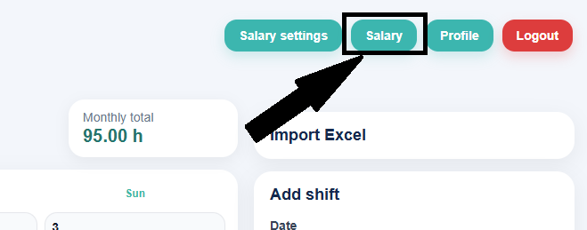

Lønn og timer

Hva viser lønnssiden?
Lønnssiden gir en detaljert oversikt over arbeidstimer og beregnet lønn for valgt arbeidsplass, måned og år.
Du kan bruke siden til å:
- velge arbeidsplass
- velge måned
- velge år
- se total lønn for valgt periode
Når du klikker på Show salary, vises lønnsoversikten for den valgte perioden.
Hva kan du se i oversikten?
AppWork viser både en enkel oppsummering og en detaljert tabell.
Oppsummering øverst
Øverst på siden kan du se:
- Total hours = totalt antall arbeidstimer
- Gross = bruttolønn før skatt
- Net = nettolønn etter skatt
Under dette vises også en oppdeling av lønnen:
- Base pay = vanlig lønn for arbeidstimer
- Evening pay = tillegg for kveldsarbeid
- Weekend pay = tillegg for helgearbeid
- Holiday pay = tillegg for arbeid på røde dager / helligdager
- Tax = beregnet skatt
Hvordan beregnes lønnen?
Lønnen beregnes automatisk ut fra registrerte Shift-oppføringer.
Systemet bruker:
- registrert dato
- starttid og sluttid
- valgt arbeidsplass
- satser for vanlig arbeid, kveld, helg og helligdager
- skatteinnstillinger
Viktig
Bare registreringer med typen Shift teller i lønnsberegningen. Registreringer med typen Plan brukes kun til planlegging og regnes ikke som arbeidstid.
Detaljert tabell
Nederst på siden vises en tabell med lønnsberegning per dag.
Tabellen kan inneholde:
- Date = dato for skiftet
- Hours = antall timer den dagen
- Base = vanlig lønn
- Evening = kveldstillegg
- Weekend = helgetillegg
- Holiday = helligdagstillegg
- Gross line = total bruttolønn for den dagen
Dette gjør det enkelt å kontrollere hvordan lønnen er beregnet dag for dag.
Tips for kontroll
Før du stoler på tallene, bør du kontrollere at:
- riktig arbeidsplass er valgt
- riktig måned og år er valgt
- alle skift er registrert som Shift
- arbeidsplassen er valgt på hvert skift
- det ikke mangler registreringer i kalenderen
Skjermbilde

Anbefalt skjermbilde
Bruk et skjermbilde der man ser både filtervalg (arbeidsplass, måned og år), oppsummeringsfeltene (Total hours, Gross, Net) og den detaljerte tabellen med daglige beregninger.